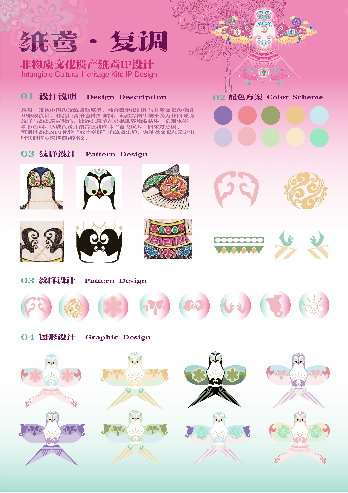

自闭症儿童互动沙盘设计
概念设计与方案设计一个仍在持续发展的概念设计项目，关注自闭症儿童相关需求，探索包容性与体验导向的设计可能。
进行中
概念设计师
在艺术、科技与人类感知的交汇处，创造有意义的体验。
艺术与科技 · 概念设计实践者
我是一名专注于艺术与科技领域的概念设计师，致力于将抽象想法转化为结构化的设计方案。我的实践通过概念设计、方案开发和体验导向的方法，探索人、系统与环境之间的关系。
设计方向：概念设计 / 方案设计 / 体验设计
一个仍在持续发展的概念设计项目，关注自闭症儿童相关需求，探索包容性与体验导向的设计可能。




欢迎在概念设计、研究项目和创意合作方面进行交流。